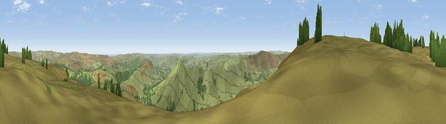

Viewpoint near Edale
#7588 in England · top 8% of its area beats it · near EdaleThe view, rendered

A 360° render of this exact spot computed from the terrain model, tree cover and land cover — summer colours, afternoon light, calibrated against photographs of famous viewpoints. Real trees, hedges and buildings will differ in detail.
The panorama
Grey silhouette: terrain skyline in each direction (720 bearings, Earth curvature and refraction included). Dashed green: skyline with trees (+15 m) and buildings (+8 m) as obstacles. Blue strip: how far the ground is visible on each bearing.
Where the view opens
Wedge length = distance to the farthest visible ground on that bearing (vegetation-aware). Rings at 10, 25 and 50 km.
What fills the view
89% grassland · 11% woodland
Angular shares of the visible panorama (visual magnitude), not map area. Landscape diversity 0.16 (0–1 Shannon).
Key numbers
More beautiful places nearby
The staircase of upgrades: each row has a higher view potential than everything closer. Driving times are estimates from straight-line distance, calibrated against real road routing — check an actual route before setting out.
| Place | Direction | Drive | Score |
|---|---|---|---|
| Grindslow Knoll | WSW · 3 km | ~7 min | 68.7 |
| Lord's Seat | SSW · 5 km | ~11 min | 73.1 |
| Viewpoint near Thornhill | ENE · 6 km | ~13 min | 74.1 |
| Harrop Edge | WNW · 18 km | ~31 min | 74.6 |
| Wild Bank | NW · 18 km | ~31 min | 76.2 |
| Viewpoint near Carrbrook | NW · 19 km | ~33 min | 77.1 |
| Viewpoint near Mow Cop | SW · 41 km | ~60 min | 78.9 |
| Viewpoint near Mow Cop | SW · 41 km | ~61 min | 80.2 |
53.38484, -1.79437 · source: screening · position refined by local search. Computed location — check access rights before visiting.